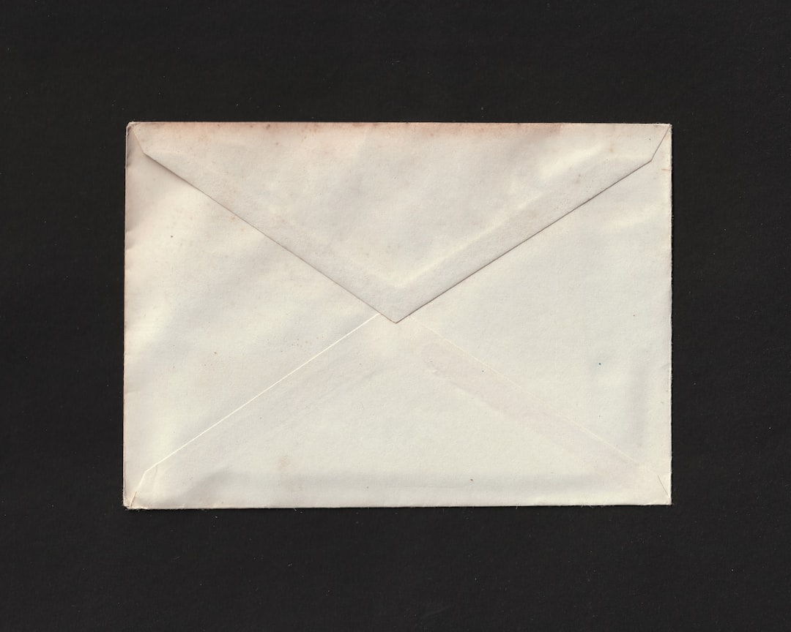

Restore order
The envelope method: how to regain control of your money does not need to be complicated to be effective. Real progress comes when money becomes readable again and every major category of expenditure finally has a clear place.
Many budgets go out of control without any apparent drama. These are not always big mistakes, but rather a mixture of vagueness, decision fatigue and small samples that pile up silently.
The goal is not to live under permanent constraint. It is above all a question of regaining visibility in order to decide calmly, instead of having to endure the outflow of money gradually.
What really matters is not spectacular trick, but the repetition of a good reflex at the right time.
What to remember
A simple method is often better than a sophisticated table abandoned after a week. Clarity creates discipline more easily than complexity.
The best budget is not the most severe. It is the one who remains understandable even the busy weeks.
Useful reflexes
- Classify your expenses into stable categories
- Provide a safety margin
- Follow the budget every week rather than once a month
- Simplify tools to last over time
Frequently asked questions
Does this method work for everyone?
Yes, as long as you adapt it to your pace and your level of spending. The principle remains the same: seek low effort for lasting gain.
How much can we really hope for?
It depends on the budget, the habits and the time you are willing to spend. The important thing is to aim for a credible and repeatable gain rather than an impressive but fragile figure.
Where to start today?
Start with the simplest action to activate in less than ten minutes. A small concrete victory is better than a grand plan that remains theoretical.